Tom Forsyth
tom.forsyth@eelpi.gotdns.org
https://tomforsyth1000.github.io/
https://mastodon.gamedev.place/@TomF
https://bsky.app/profile/tomforsyth.bsky.social
This document version 1.0, 2026 September 27th https://github.com/tomforsyth1000/DASHR
Short video: https://youtu.be/-Su9YrcazRk Longer video soon!
Irregular triangular meshes with texture mapping and bone-based animation are currently the backbone of realtime rendering - they are powerful, flexible, well-understood, and have impressive GPU acceleration. Artists have become extremely proficient in authoring this sort of model. It has some obvious pain points such as “doing your UVs” - mapping the texture onto the mesh in an elegant way without distorting the mapping or wasting too much space. On the other hand, artists have become very very good at this, and there are various tools to help, and once done they do provide an intuitive and useful model for performance and quality.
When rasterised with a depth buffer, triangle-based methods have been susceptible to huge advances in hardware acceleration in the standard pipelines for Direct3D, OpenGL, Vulkan and Metal. Huge effort has been put into making rendering these triangle meshes fast and cache-friendly. Triangle mesh rendering is also well-supported in a very different rendering architecture in the “tile-based rendering” style of hardware acceleration - just as fast, just as clever, and now ubiquitous in mobile devices.
The limitation is that triangles are fundamentally flat, and trying to add depth and detail to a surface by adding triangles creates a lot more geometry and shrinks triangles to be so small that their efficiency drops, aliasing becomes a big problem, and the bandwidth to supply the geometry data starts to dwarf the bandwidth for the pixels. Many Level-Of-Detail schemes have been explored over the years, but fundamentally it is hard to apply Nyquist-like signal-processing and filtering algorithms to triangle meshes, nor do they compress particularly cleanly.
By comparison, volumetric representations such as heightfields, voxels, SDFs or fractals elegantly express more than just flat planes and can have lots of fine details. Most importantly, many of them can be analysed with signal processing algorithms, allowing high levels of compression and anti-aliasing methods. Sadly they are currently expensive to render, difficult to author, expensive to store at large scale, and very hard to animate.
DASHR is my attempt at fusing the two worlds - the authoring and animation ease of traditional triangle meshes, combined with the fine details and bandwidth-efficient aliasing control of a volumetric representation. The key is being able to convert between the spaces that the two are defined in with efficiency, and dealing with the inevitable edge cases as elegantly as possible.
It is important to say something up front, before going into details. This implementation of DASHR uses a heightfield raymarcher. However, the heightfield raymarcher is not the interesting thing about DASHR. The heightfield raymarcher is just there to demonstrate the algorithm working (and it happens to also make the acronym work). The raymarcher used in this paper and demo is not very sophisticated, and could be swapped out for any sort of volumetric representation or traversal. There is lots of literature on better heightfield raymarchers that can be used instead, and indeed any volumetric rendering technique can be used such as cone-tracers, general SDF marchers, fractal methods, cubic voxel representations, etc. So while reading this paper, please focus on how it crosses the boundary between the two spaces (triangular mesh and volumetric), and not on the details of the ray marcher itself.

“It is like a raymarcher tracing away to the moon. Don’t concentrate on the raymarcher or you will miss all that heavenly glory.” - principal rendering engineer Bruce Lee.
Terminology in this field is rather varied. Although there are many concepts that are standard in the literature, different authors use different terms, so it is useful to define the terms I will use here. I will try to Use Caps For These Terms to highlight these precise meanings in the text. The definitions here are necessarily terse and may not make much sense until later explanation:
Unique Mapping: a set of UV coordinates that map any
point on the mesh surface to a unique spot on a 2D texture or
representation. To be explicit, no two spots on the mesh may be mapped
to the same place in the texture, and vice versa. In addition, “gutters”
are needed between disjoint parts of the mesh. This is often called a
“parametrisation” in many graphics papers, and is also a familiar
concept in gamedev - some toolchains require these for e.g. lightmap
generation passes, or normal-map baking from higher-resolution assets.
There are plenty of existing tools to generate these, or they can be
artist-generated.
Object Space: regular old Euclidean space, centred
in whatever the “object” is you are rendering - a character, a vehicle,
a rock. Units are in meters, right angles stay right angles, parallel
lines never meet, etc. You can do regular geometric maths here. Note
that Object Space is after any bone animations have been
applied.
Surface Space: the distorted space defined by a
triangular mesh’s surface, extruded by a certain thickness. This is also
often called “tangent space” in many lighting algorithms, and it is
defined by the Normal, Tangent and Bitangent basis vectors at each
vertex. Note that in the context of DASHR there are subtle differences
between Surface Space and the conventional realtime rendering idea of
“tangent space”, which I will go into later, but the mental model is
still very similar. This is also called “shell space” or “skin space” in
some literature. Just like the lighting equivalent, Surface Space can be
deformed by runtime animation in standard ways. The convention in this
paper is that the three dimensions of Surface Space are the U coordinate
of the Unique Mapping, the V coordinate of the Unique Mapping, and the
extrusion distance from the triangular mesh, normalised as a value from
0 (inwards) to 1 (outwards), with the triangle mesh itself being at
value 0.5. The distance in Object Space of 0-1 in Surface Space is
defined by the length of the normal vector at that vertex.
Distortion Texture: a “texture” (or usually a set of
textures) that uses the Unique Mapping to wrap around the mesh. Each
texel on this texture defines a mapping from Object Space to Surface
Space for that specific point on the mesh. Although conceptually each
texel is a 3x4 transformation matrix, it can be stored in a variety of
ways in practice, and this will be discussed. This texture is
dynamically generated each frame. The name “texture” may feel curious,
but it is appropriate because the linear interpolation applied by the
texture unit when sampling it is useful and important.

Edgefill Texture: a “texture” that uses the Unique
Mapping to map to the mesh. Each point on this map has a UV coordinate
that points to the nearest valid part of the Distortion Texture, i.e. a
part that is inside the triangular mesh. For parts of the Edgefill
Texture that are inside the triangular mesh, the UV simply points to
itself. For parts that are outside the triangular mesh, they point to
the nearest part that is inside. This is used to spread out the valid
area of the Distortion Texture so that bilinear filtering can be used
even at the edges of the valid area. This is a common technique to fill
in the “gutters” of standard textures - the difference here is because
the Distortion Texture is generated every frame, this gutter-filling
must be done on every frame, and the Edgefill Texture does this process.
This will be explained in more detail below.
Teleport Texture: a “texture” that uses the Unique
Mapping to map to the mesh. Like the Edgefill Texture, this contains UV
coordinates that refer to a different part of the Distortion Mesh. Like
the Edgefill Texture, inside the valid area of the Distortion Texture,
each texel just refers to itself. However, at the edges of the valid
Distortion Texture - at the “seams” in the triangular mesh - the
Teleport Texture points to the part of the Distortion Texture on the
other side of the seam. When the raymarcher steps off a texture seam,
and off the valid part of Surface Space, this texture tells it where to
teleport to find the part of Surface Space that is on the other side of
the seam. This will be explained in more detail below.
The Edgefill and Teleport Textures are somewhat complementary - they both tell the raymarcher what to do when it steps off the edge of the mesh in Unique Mapped Surface Space. The Edgefill Texture ensures that there is valid data “out there” so that linear interpolation can do the right thing, and so that stepping more than a texel off the edge doesn’t give junk data. At the same time, the Teleport Texture redirects the raymarcher and tells it where to find the adjoining part of the map in Surface Space.
This is to provide an overview. The steps will be explained in more detail below. Steps labelled with (G) are Generic - they are existing technology necessary for the demo, and most have multiple alternative implementations. In particular many are shared with existing Parallax Occlusion Mapping methods. Remember Bruce Lee’s advice!
(G) Take a standard triangular mesh with a Unique Mapping, normal vectors, and bone weights already assigned.
(G) Generate a Surface Space for the mesh by calculating tangent and bitangent vectors for each vertex. Surface Space is defined at each vertex by the UV coordinate of the Unique Mapping, and its axes are the U tangent, V bitangent and the normal vector at each point. To say it another way, Unique Mapping + extrusion thickness = Surface Space.
(G) The Unique Mapping UV is also used as the albedo/diffuse texture UV, and as the heightmap UV, though this is for convenience rather than a requirement.
Find the “texture seam” edges. These are edges in the mesh that are used by only one triangle. For each of these, find the coincident edge in Object Space, i.e. the edge that is used by another triangle, but occupies the same position in Object Space. This pair of edges is a coincident pair in Object Space, but topologically they are different, and they have different locations in the Unique Mapping, and thus in Surface Space. The Teleport Texture data is set up so that the two edges are linked to each other.
For each of those texture seam edges, fill in the Edgefill Texture so that reading slightly off the edge still produces correct data.
Each frame, the following happens:
(G) Bones are animated on the CPU, sent to the GPU.
The mesh is rendered to the Distortion Texture in a renderpass by the GPU.
(G) The vertex shader uses the bone data to animate the mesh data into Object Space, along with the tangent, bitangent and normal data.
Unique Mapping plus tangent, bitangent, normal data form a transformation from Surface Space to Object Space. This is inverted at each vertex, so it is now a transformation from Object Space to Surface Space.
This transformation is interpolated by the pixel shader and written to the Distortion Texture at each texel covered by the mesh in the Unique Mapping.
Note that although this is rendering the mesh, it is not rendering the Object Space shape of the mesh, as with the final pass. Instead it is rendering to the Distortion Texture using the Unique Mapping UV coords as pixel XY.
Edgefill is applied to the Distortion Texture in a renderpass by the GPU.
This spreads the data written by the previous pass, into the adjacent texels, to areas that the mesh data does not cover. This allows sampling with bilinear filtering without bringing in uninitialised data.
At the same time, finite differences are taken of the transformation in the Distortion Texture to find the amount of local extra distortion induced by the dynamic animation of the mesh. This animation-distortion data is written to extra channels in the Distortion Texture.
The main scene is rendered to the backbuffer.
(G) The vertex shader again uses the bone data to animate the mesh data into Object Space, along with the tangent, bitangent and normal data.
Each vertex is extruded half-way along its normal vector. The assumption here is that the normal vector defines the thickness of Surface Space, and the default mesh defines the midpoint of that thickness, i.e. it has third coordinate 0.5. This extrusion then creates a mesh at coordinate value 1.0 in Surface Space, i.e. the outermost edge of Surface Space.
(G) The extruded Object Space data is now transformed to world space and then camera space and perspectively projected as in any standard rendering pipeline, and the mesh is rendered as usual.
Each pixel shader invocation thus starts at the outer edge of Surface Space.
The pixel shader knows where it starts in Surface Space - it is the coordinate (Unique Mapping U, Unique Mapping V, height=1.0)
(G) The pixel shader knows which pixel on the screen it is rendering to, and therefore using the camera and projection matrix data it can calculate where it starts in Object Space, and which direction in Object Space the ray from the camera to its start position points in.

The raymarcher then starts stepping along the ray direction in Object Space.
At each step it also has a reasonable estimate of where the ray is in Surface Space.
The first two coordinates of Surface Space tell it where in the Unique Mapping the ray is, and therefore where it is in the Distortion, Teleport, albedo and heightfield.
The third coordinate of Surface Space tells it how “high” the ray is in the thickness of Surface Space.
(G) Using the Surface Space UV coordinates, the heightfield texture is sampled. The height is checked against the ray’s current height in Surface Space. If it is lower than the heightfield, it has hit, the raymarcher stops marching, and returns the Unique UV coordinate to the lighting routine for shading.
If it has not hit the heightfield, the Distortion Texture is sampled using the Surface Space UV coordinates. This returns a transformation from Object Space to Surface Space, along with the dynamic animation-distortion data computed in the Edgefill pass.
(G) The raymarcher now takes a step along the ray in Object Space. Object Space is standard undistorted continuous space, so this is simple.
The raymarcher uses the transformation from Object Space to Surface Space it just sampled to transform the new Object Space position into a new Surface Space estimate. The animation-distortion data is used to modulate the transformation to damp down oscillations in the estimate (this will be explained later).
The new Surface Space UV coords are used to check the Teleport Texture. That may say that the ray has gone off an edge in Surface Space, in which case it also says where to teleport to in Surface Space to rejoin the valid mesh data.
(G) The raymarching repeats until the heightfield is hit, or the ray “escapes” Surface Space because its height coordinate exceeds a certain limit (nominally 1.0, but it can be useful to use a higher value in some cases).
Note that aside from the animation bone data and object/camera/projection matrices, which are all completely standard work for most realtime rendering pipelines, all the DASHR work is done on the GPU, and there is no feedback or synchronisation to the CPU.
The above summary is deliberately brief, and there may be some curious details that will explained below, but it should be clear that many of the steps are conventional for either a mesh renderer, or for a raymarcher. It may be odd to see them done at the same time, although anyone experienced with Parallax Occlusion Mapping will find the overall structure familiar.
The key problem that DASHR solves is finding a bidirectional mapping between Object Space and Surface Space. Why do we need this? Because Object Space is nice simple Euclidean continuous space, and thus is the space that rays can travel through in straight lines - this is the fundamental space that we do all geometric operations in such as tracing straight lines, measuring distances, doing reflections and so on. It also has no seams or edges to worry about.
By comparison, Surface Space is curved - it follows the contours of the mesh, and the UV mapping laid onto that, and the directions of the normal vectors at each vertex. It also has edges beyond which the data stops being valid, and (just like an albedo texture) turns into areas that should not be rendered. It also has seams where two edges meet - where two different distant parts of Surface Space are meant to lie next to each other in Object Space. At these edges, we need to have rays instantly traverse the gap from one side to the other in Surface Space.
To make matters worse, the definition of Surface Space is not even in Object Space - it is in the pre-animated space I call “bone space”, which for characters is often called T-pose space because that is how a lot of characters are modelled before they are animated. Each frame, that bone space mesh (and the definition of Surface Space) is deformed by the animated bones into Object Space. So the mapping from Surface Space to Object Space is not fixed - it changes every frame.
DASHR solves this problem, and gives us a bridge between the two worlds - between the conventional animated 2D triangle mesh representation space of most realtime rendering systems, and a more volumetric 3D space of raycasters and SDFs. This lets us combine the two types of rendering.
Once we have that bridge, we can use any sort of volumetric representation we want, and use a wide variety of traversal methods. I have chosen a single-layer heightfield and a fairly simple raymarcher as illustrations of the algorithm working, but almost anything could be plugged in.
There are two key algorithmic subtleties that should be emphasised here. Understanding these is key to how and why the DASHR algorithm functions as well as it does.
The first is that the mapping from Object Space to Surface Space is stored in the Distortion Texture, and this indexed by the position in Surface Space. It has to be this way, because only Surface Space is a 2D surface (with a relatively small thickness). Although in theory the Distortion Texture could be indexed by the Object Space coordinate (which is 3D), this is typically impractical because of the large storage and bandwidth requirements, and because of mesh discontinuities (“texture seams”).
However, this does mean we have a curious thing - the mapping FROM Object Space (which we know) TO Surface Space (which we want to know) uses an index IN Surface Space. How can that possibly work? The raymarcher has to remember that its current Surface Space position is only an estimate, and it relies on the Distortion Texture being locally smooth. This means that using a nearby Surface Space position to index into the Distortion Texture gives a pretty good approximation to the correct mapping from Object Space to Surface Space, and applying it to the new Object Space position to produce a new Surface Space estimate will be reasonably accurate. If we need a result with more accuracy, we can repeat the operation using the new Surface Space approximation, and repeat until the result converges. But that sounds slow.
The second subtlety is that the DASHR algorithm is almost always used with an iterative intersection solver such as a raymarcher. Most algorithms for volumetric traversal and rendering use dynamically-sized iterative refinement as part of their intersection-finding mechanisms. While the ray is distant from the surface, large steps are taken, and as it approaches the surface intersection, smaller and smaller steps are made until the exact intersection is found. These steps might not always be forwards, e.g. in interval-division refinement, but the principle still holds - start with large steps, take smaller steps as the solution approaches the surface.
The exciting thing is that these two characteristics work simultaneously. The iterations needed to refine the intersection with the volumetric surface representation are ALSO the iterations that refine the mapping between Object Space and Surface Space. I was worried I would need to do two separate iterative loops, one inside the other, but in fact you can just do both steps at the same time, and everything converges nicely (though see some details below for when this doesn’t quite work perfectly!).
This all sounds like hoisting yourself by your own bootlaces, but in practice works surprisingly well - the solutions converge well and the results are stable. Having a single iterative solver solving both problems at the same time (the mapping between Object Space and Surface Space, and the intersection with the surface) is the key to DASHR’s speed and practicality.
Although this paper and the demo are focused around a traditional rasterisation pipeline, the fundamental DASHR technique could also be built into a raytracing framework and should provide similar benefits.
Raytracers have been around a long time. They work very well in functional terms, but their performance is typically orders of magnitude slower than equivalent rasteriser pipelines because they have poor memory coherence as they traverse their working set. In addition, it is difficult to stream that working set, putting hard limits on the size of worlds that can be raytraced without requiring huge memory stores. Additionally, most of the techniques to improve memory coherence cost even more memory, causing more cache pressure, and they end up not helping as much as hoped.
Hardware acceleration for raytracing has been gradually added to GPUs, and it has some success, but the inherently poor cache coherence limits its performance even under the best circumstances. More typically it is integrated into a conventional rasteriser pipeline, and used for shadows and reflections, and even then at a disproportionate performance cost. All the current implementations require a significant up-front cost to build a spatial acceleration structure (usually a Bounding Volume Hierarchy of some kind) and this is a big barrier to raytracing animated shapes.
Raymarching is closely related to raytracing, and the terminology is inexact, but the way I use the two terms, a raytracer attempts to find a one-shot analytic answer to where on the object an infinitely long ray hit, and find the answer in one go. In contrast a raymarcher steps along the ray piece by piece, evaluating a function to see if something was hit along the way. This allows raymarchers to iteratively solve intersections that cannot be solved analytically, such as with most complex Signed Distance Functions, and raymarchers are used in many fantastic demos and Shadertoy programs. There are of course many hybrids of the two approaches, and as said the terminology is fluid. DASHR is very much a raymarcher and not a raytracer, and in this case the iterative nature is core to the algorithm.
Parallax Mapping / Relief Mapping has been written about and implemented many times and many ways, for example “Real-Time Relief Mapping on Arbitrary Polygonal Surfaces” by Policarpo, Oliveira, Comba: https://www.inf.ufrgs.br/%7Eoliveira/pubs_files/Policarpo_Oliveira_Comba_RTRM_I3D_2005.pdf. The idea is to map a heightfield to a standard realtime mesh, rasterise the outside surface of the mesh, and then raytrace or raymarch through the heightfield as part of the pixel shader. This has the advantage of rendering the same mesh as used for regular rendering pipelines, and so using many of the existing creation tools. The limits of this technique are that silhouette edges are not handled correctly, for example as shown in this video: https://www.youtube.com/watch?v=6f37CFbJ9k0 and means that the effect breaks down when the size of the heightfield becomes significant compared to the size of the model, so it is only useful for relatively small displacements. Dealing with texture seams is tricky for similar reasons.
Parallax Occlusion Maps / Shell Maps are an extension of parallax mapping for both runtime and offline raytracing. The idea is to model the object as a standard mesh, but then extrude the mesh slightly into a thicker “shell” or “skin”, then chop that shell into smaller chunks - typically prisms or tetrahedra. These smaller primitives then have a low enough curvature that they can be rendered with conventional raytracing/raymarching methods. An example of this, generating first prisms and then tetrahedra, is the paper “Shell Maps”, Porumbescu, Budge, Feng, Joy: https://www.cs.jhu.edu/~misha/ReadingSeminar/Papers/Porumbescu05.pdf. Another example is “Real-time rendering of animated meshless representations”, Luton and Tricard, HPG 2025. The biggest limitation is the large number of tetrahedra generated, which means a lot of ray/tetrahedron intersections needed, and then each tetrahedron needs to be rendered by the GPU, causing a lot of overdraw.
There are lots of variants of Parallax Occlusion Maps in various rendering engines, but as far as I know none of them can be animated, and many have difficulty dealing well with texture seams and silhouette edges, which limits them to very specific types of meshes. I hope these engines will adopt DASHR and make these concepts more generally useful.
An interesting variant is “Nonlinear Ray Tracing for Displacement and Shell Mapping”, Shinji Ogaki, SigGraph Asia 2023: https://github.com/shinjiogaki/nonlinear-ray-tracing. Like Shell Mapping, it starts by chopping the surface into distorted prisms, but it requires fewer prisms as it raytraces through them with curved lines, solving rational cubic equations rather than straight lines. Note that because this paper starts from the perspective of raytracing, it spends a fair bit of time talking about the spatial acceleration structure, and it is unclear how to move this algorithm to an efficient realtime technique with dynamic animation.
A very recent example is “Ray Tracing Massive Amounts of Animated Geometry” by Gruen, Benthin, Kern, McAllister, ACM Comput. Graph. Interact. Tech. 9, 4, Article 49 (July 2026) https://gpuopen.com/learn/ray-tracing-massive-amounts-animated-geometry/. It also has the concepts of the two spaces - the equivalents of Object Space and Surface Space - linked by a structure, though in their case the structure is a tetrahedral mesh rather than the Distortion Texture used by DASHR. Their focus is on using the DXR raytracing libraries, and these require Bounding Volume Hierarchies for efficiency, so there is considerable space devoted to keeping those updated.
Of the above, DASHR’s algorithm is best considered an evolution of Parallax (Occlusion) Mapping, and adds many of the concepts of Shell Mapping, such as the idea of an extruded shell of triangles. However it does not produce extra prism/tetrahedra geometry, does not add a lot of layers of overdraw, and does not attempt to locally linearise the problem. It also, aside from some preprocessing steps, runs entirely on the GPU.
It is fascinating to me that the Shell Mapping paper comes very close to DASHR’s algorithm in defining the “shell mapping” - the bijective mapping (or transform) between Object Space and Surface Space (or as they call them, “Shell Space” and “Texture Space”). The step that DASHR does is to put that mapping into the Distortion Texture and let the GPU use it directly. However the Shell Mapping paper is from 2005, and GPUs of the time were simply not up to that task, so instead they have to tetrahedralise and linearise the problem. It works, but it’s very expensive on both CPU and GPU. As far as I can see they never followed up as technology evolved in capability, which is a shame.
The brief operation flow was given above, but this section will go through the details of each phase in execution order. Because some of the preprocessing in the early phases is only used later on, it may be a little tricky to read in linear order, and some hopping around may be required. Additionally, some of the steps are presented without justification here for brevity - they will be expanded upon later on.
These steps are all done at mesh authoring time, or mesh load time. They are not particularly performance-critical, and are almost all performed on the CPU except where noted.
This part is much like any other conventional pipeline. The mesh has a few restrictions that need to be followed:
In the current demo, all texture channels (albedo, normal map, heightfield) also use this same Unique UV mapping, however this is just to keep the demo simple and is not required. In a more realistic production environment they would use one or more secondary UV channels, and their mapping does not need to be unique.
It is also assumed that the mesh is specified in standard D3D/OGL/Metal format of having a triangle specified by three indices, each of which indexes into a vertex buffer which has all the information required. Where two different UV mappings meet, what I call a “texture seam”, the vertices on that seam will be duplicated. They will be two different vertices in the buffer - they will have the same position and normal data, but they will have different UV, tangent and bitangent data. Most DCC tool output is significantly more complex, with each triangle specified by multiple indices (one for each of position, normal, UV coord, etc) - this could be supported with effort. However, most realtime rendering systems already have pipelines that convert to the D3D/OGL/Metal style.
The incoming mesh does not need valid tangent and bitangent data - that will be generated. As the demo currently works, it does require normals to be provided, and they need to be smooth across seams. However, with future effort the normals could be computed from the mesh and some sort of smoothing group data.
Most of the preprocessing phase is done on the CPU, but this phase is done on the GPU. To find out which of the texels are updated by the per-frame Distortion Pass, we do an initial Distortion Pass render. The target is cleared with distinctive data (here I use INFinity, since for the demo the Distortion Texture is all float32 data). Then the standard runtime Distortion Pass (see below) is done, using any reasonable animation data. All we care about is which texels get data written to them.
As in the Distortion Pass, the target pixel XY is the Unique Mapping UV coordinate (which is the same as the first two coordinates of Surface Space) rather than anything to do with conventional Object Space. The data written can be anything, as long as it is not INFinity.
After rendering the mesh, the texture is copied back to the CPU, and
where data is still INFinity, we know that this texel was not updated by
the Distortion Pass. This is marked in a map (in the demo, this is the
bool surfaceWarpPresent member in the
TeleportEdgefillData array). This Occupancy Map is used
later in preprocessing.
The vertices of the mesh are scanned to find what I call “proximal” vertices - vertices that have the same position in Object Space, but may differ in UV coordinate. As the demo currently works, they are also required to have the same normals, but future work should relax this. Prox vertices are placed in a circular linked list - each vertex has a single pointer to the next in the list. Vertices with no other prox vertices point to themselves.
The triangles are scanned to make sure every edge in the mesh has exactly one matching edge, either using the same vertices, or prox vertices with the same positions, but different UV coordinates. Note that it is important to support “V-shaped” seams - those are seams where one vertex is actually shared between the edges, but the other vertices are prox to each other. These are a common feature of real-world mesh UV construction to avoid excessive UV distortion. In the demo they occur near the ends of the “wiggly tube” mesh.
If an edge is a regular edge, in that the triangles on both sides use the same vertices, no further action is necessary. If an edge is a “texture seam” where the vertices used by the triangles on each side share Object Space position but not UV coordinates, more work is required.


The Teleport Texture tells the raymarcher how to traverse in Surface Space from one side of a texture seam to the other side. Each seam found in the previous phase is traversed in the Unique Mapping space, and for each texel on or near either seam edge, we calculate what the closest point on the edge is, and thus where the UV coordinate of the other side of seam is. This UV coordinate is written into the Teleport Texture. This process is done twice, one for each direction of crossing the seam.
At the same time, the distance from the edge is used as a Signed Distance Field and written to the third component of the Teleport Texture. A negative value means the texel is inside the mesh, has valid data, and no teleport is needed. A positive value means the raymarcher has moved off the valid UV mapping, and needs to teleport to the matching edge determined by the first two components of the Teleport Texture.
The function of the Teleport Texture will be examined in more detail later on.
For simplicity, the current demo does not attempt to walk the seam edges precisely with Bresenham or equivalent - it simply draws a bounding box around each edge, computes the distance to the edge, and keeps the values closest to an edge. This makes sure no texels are missed, and combined with the next flood fill stage, works surprisingly well.

In this diagram, the interior of the mesh is still uninitialised black, the outside is uninitialised blue. The inside of each edge is drawn with their own UV coordinates (red = U, green = V), and do not cause teleportation. It is only the edges with the different colours that actually cause any teleportation. The blue outer fringe on the edges represents the SDF that triggers a teleport if it positive.
Where the Occupancy Map tells us that the Distortion Texture will have valid data, the Edgefill Texture’s UV source is just set to its current UV value, i.e. the source and destination are the same, no data movement required. Where the Occupancy Map is clear, the Edgefill Texture remains invalid, ready for the next phase. Note that the interior of the Edgefill and inside of the teleport textures are the same data (stored UV = actual UV), but the two textures are used in different phases of rendering later.
At the moment, the Edgefill texture does nothing interesting - it needs the flood-fill phase to work.

For each currently invalid texel in the Edgefill and Teleport Textures that is NOT set in the Occupancy Map, the nearest valid data is copied. This effectively does a flood fill of the Edgefill and Teleport Textures to fill in all the areas not covered by the Distortion Pass. This phase is currently implemented inefficiently in the demo - it could be sped up, but it is just a preprocess step, not done every frame.


The teleport texture can be hard to interpret. Each seam edge has an inside where the Distortion Texture is valid and no teleportation is needed. The UV coordinates here are just the UV coordinates of the texel, i.e. if the teleport was done, it would have no effect. On the other side of the seam, outside the valid Distortion Texture, the teleport texture’s UV values are the UV values of the inside of the matching seam elsewhere in the Distortion Texture.
In the following diagram, pairs of edges are highlighted with different coloured ellipses. Focusing just inside the white and yellow ellipses, it should be clear that their contents are the same colours and shapes. So for the white set, in both cases orange is on the left, green on the right. The same for the yellow ellipses. One side of the teleport texture says “stay here” while the other side says “go to the matching one”, thus the colours match in both areas.
In the case of the cyan ellipses, the same is true even though the orientation of the ellipses is different. There is still a burgundy colour on one side of the seam, and a green-to-orange gradient on the other.
The blue channel shows the SDF used to decide is a teleport should be performed. The valid interior of the mesh has a negative value (clamped to zero when display), the invalid exterior where the raymarcher should teleport is positive and tinted more blue the further away it is.

The incoming mesh should have had valid position, normal and UV data, but did not need valid tangent and bitangent data. Although there are industry-standard tools (such as the excellent MikkTSpace) to generate these spaces, they typically generate tangent spaces where the tangent and bitangent are unit-length, and at right angles to each other. This is typically fine when using tangent space for normal-map lighting, and compresses well to octahedral maps and suchlike.
However the DASHR algorithm requires tangent and bitangent vectors to have lengths that mean physical values, and to accurately point along lines of constant U and V, since they form the mapping from Surface Space to Object Space. The best way to visualise them is to take a single triangle, consider the texture mapped on to it, and extend that plane out in space until the whole texture is shown from 0.0 to 1.0 in both U and V space. This will be a parallelogram - and quite a large one in most cases! The tangent vector is the vector along the “U” side of the parallelogram (from V=0.0 to V=1.0), and the bitangent vector is along the “V” side of the parallelogram (from U=0.0 to U=1.0). They are not necessarily at right-angles to each other (though they should be at right-angles to the normal), nor are they necessarily the same lengths, and usually neither is unit-length.
In practice, the tangent and bitangent are only well-defined for each triangle of the mesh. For each vertex, we find a weighted average of the tangent and bitangent of the adjacent triangles. Here I weight by the angle the triangle forms at the vertex, which seems to work well.
As the demo currently works, the normals for each vertex are taken from the source mesh, while the tangent and bitangent are computed as above. Pedantically, the normal should be at right angles to both the tangent and bitangent (though they are not necessarily at right angles to each other). However, the algorithm is robust to all three not being at right angles, and there doesn’t seem to be any real need to ensure this.
Also note that if the normals were re-calculated to be at right-angles to tangent and bitangent, it adds extra complexity since proximal vertices do need to have matching normals, but they will (by definition) not share tangent and bitangent data. This means that you would need to calculate a normal that was the average of all the proximal vertices, then go back into each and recalculate the tangent and bitangent so they are at right angles to this new average normal. It’s a lot of work, and it does not appear to be necessary to make the algorithm work.
Most existing pipelines will have tools to generate tangent spaces, and it should be relatively simple to modify them to produce the correct “physical” tangent and bitangent vectors that DASHR requires, either instead of or in addition to the standard ones used for normal-map lighting. The DASHR demo demonstrates using the physical vectors for conventional normal-map lighting.
Discard the Occupancy Map, turn the Teleport and EdgeFill Textures into actual GPU textures & discard the source data. Both textures are computed only in this preprocessing step and do not need to be updated during normal rendering. They are currently stored using float32 channels for simplicity, but since both store UV coordinates for the Distortion Texture, a smaller format of 2x unorm16 would work instead, with the teleport SDF going into a separate single-channel 8-bit texture, biased so that 0.0 is mapped to 128.
The realtime phase is performed every frame. Except where noted, almost all of it is performed on the GPU, and there is no data read back by the CPU.
Each frame, the camera and objects are moved, the bones are animated, and all that animation data is uploaded to the GPU. Since this is done the same way as most realtime rendering pipelines, the details are not very interesting. The CPU then kicks off three rendering passes by the GPU.
The first pass renders to Distortion Texture #1. The HLSL for this
pass is in PipelineDeform.hlsl in the demo code. Because it
is a Unique Mapping, no Z buffering or blending is needed. The mesh
rendered is exactly the same vertex & index buffer data as the main
render pass, however it is used slightly differently.
The important thing about this pass is that the destination position of the vertex (and then the destination of the pixel shader) is not the position in Object Space (or a perspective projection of it), as it is in the main render pass. Instead, the destination “pixel” coordinate is the Unique Space UV mapping, read directly from the vertex buffer, and the place it is rendering to is the Distortion Texture.
Note that the Distortion Texture is conceptually a 14-component texture - a 3x3 basis matrix, plus a 3-component offset vector, plus 2 animation distortion components. In practice it is four 4-component float32 textures that must be read and written separately. Some wrapper functions help hide the annoying component-swizzling that this requires.
First the vertex shader reads all the usual data from the vertices, and performs standard 4-weighted-bone animation as used in almost every existing game engine, to produce animated & deformed values for position, normal, tangent and bitangent. These vectors are all now in Object Space, i.e. they have been animated to the correct object-local space. This space is Euclidean, not distorted, and you can do standard geometry in it.
However at each vertex the Unique Mapping UV, normal, tangent and
bitangent form the basis vectors for Surface Space. This is the space
that the heightfield is defined in, and the vertex shader can define a
transformation from Surface Space to Object Space, formed from these
basis vectors. Note the direction here - the normal, tangent and
bitangent are vectors in Object Space, and so if given any point in
Surface Space (e.g. a heightmap texel), they can transform the point to
Object Space. The naming system in the demo code tries to be very
specific here - this transform is called objectFromSurface.
The “from” nomenclature is used so that when writing multiplication the
names match up and provide some error checking - you can read more about
it in my blog post here: https://tomforsyth1000.github.io/blog.wiki.html#%5B%5BMatrix%20maths%20and%20names%5D%5D
However, what we want to write into the Distortion Texture is the
inverse. The raymarcher will know where it is in Object Space - that is
where the ray is marching through in a straight line. What it wants to
know is where that is in Surface Space, so this phase inverts that 3x4
matrix to produce the SurfaceFromObject transform. This is
then written to the Distortion Texture.
The slightly goofy part is that as previously mentioned, the position this transform is written to in the Distortion Texture (i.e. the destination pixel coordinate in the render-target) is the coordinate in Surface Space, formed by the Unique Mapping UV. Yo dawg - I heard you wanted to know where you were in Surface Space, so I gave you a map in Surface Space that gives you a transform to Surface Space so you could find out where you are in Surface Space.
In practice what happens is the raymarcher always knows roughly where it is in Surface Space, and the distortion field is smooth enough that the transform it looks up is close enough that when applied to the known Object Space, it gives a more accurate Surface Space position. This breaks down in some cases, which I will explore later.
There is some extra complexity here to do with which distortion mode
(#0 or #1) is being used. To avoid getting sidetracked, the discussion
of the two modes is deferred until later. Either way, the
objectFromSurface transformation is sent to the pixel
shader for interpolation and writing.
The pixel shader in this pass is trivial - it interpolates the transform and writes it to the Distortion Texture, which is mapped as four rendertargets, each made of four float32 components. The only thing to note is that while the transforms calculated by the vertex shader are accurate, they will be component-wise-interpolated when being passed to the pixel shader, which is not necessarily an accurate thing to do, but works fine for reasonable sizes of Distortion Texture (the demo defaults to 256x256).
The previous pass only wrote to the Distortion Texture texels actually covered by the mesh. However, as the raymarcher marches around the surface, it can stray off the mesh slightly, and it is also using bilinear interpolation, so we need to “flood fill” out a bit.
To do this a pass renders from Distortion Texture #1 to Distortion Texture #2 using the edgefill texture as an indirection. For texels that are updated by the previous distortion render pass, the edgefill texture is straight-through mapping - stored UV equals current UV. For texels outside the mesh, the edgefill texture indirects to the nearest texel that is updated.
The shader code is in PipelineEdgefill.hlsl and is fed a
single quad that covers the whole destination.
In principle this shader is simple, but it has two complications. The first is that the two distortion modes must be handled differently, and the second is that it must compute the extra distortion caused by the runtime animation. Both of these are skipped over here for brevity, but will be discussed in more detail later.
This render pass renders the mesh to the visible framebuffer with the regular depth buffer, projection matrices and all the usual parts of a render pipeline.
The shader code is in PipelineMain.hlsl. The vertex
shader is very conventional. It reads the vertices and animates the
position and normal with 4-bone-weighted-skinning like a conventional
pipeline. For ease of reading it also animates the tangent and
bitangent, although these are not used in this phase.
The mesh is then extruded by moving the vertex position outwards along the vertex normal by half the skin thickness, and the vertices go through the standard camera and projection matrix to get mapped to the screen. This mesh forms the outer shell of the object being rendered, and its only purpose is to have a place that the pixel shader can be invoked on the outer edge of Surface Space.
The vertex shader then calculates the direction in Object Space of a ray being sent from the camera to the vertex. This will be passed to the raymarcher in the pixel shader. That’s all the vertex shader does - very simple.
The pixel shader is where the big work happens. However, most of the
actual code in the ps_main() function is concerned with
lighting and debugging. These are not particularly unique to DASHR and
aside from the two calls to TraceRay() (one for the primary
ray, one for a shadow ray) the code should be fairly obvious. There is a
little subtlety to preventing self-shadowing acne controlled by
shadowAcneScaler but the comments should explain it
well.
The most important interpolated values passed from the vertex shader to the pixel shader are the Object Space ray start and ray direction, and also the ray start position in Surface Space. Because the pixel shader was invoked on the inflated surface of the mesh, it knows the starting Surface Space position because that is simply the interpolated Unique Mapping UV, combined with a height of 1.0.
After that, the bulk of the work in the pixel shader is done by the
call to the function TraceRay(). This gets passed in a ray
start position and direction in Object Space, the start position in
Surface Space, and a variety of controls and scales. It has a big loop
that does the following steps. Here is a text description of the steps
in TraceRay(), but if you prefer in the next section there
is a version with code and diagrams. The items in bold are the heart of
the DASHR algorithm:
surfaceFromObject transform from the Distortion
Texture.
GetPosInSurfaceFromDistortionTexture does
a few things:
surfaceFromObject transform and the
animation distortion from the Distortion Texture.rayStepFactor2D to 1/100 to slow traversal speed.rayStepFactor.rayStepFactor is less than one (in areas
of self-intersection), the ray’s Object Space step is rewound and
stepped slower.
Many of these steps are a standard part of any raymarcher, or a standard part of Parallax Occlusion Mapping, and there is nothing particularly clever about this implementation of it, and it could certainly be improved in many ways - but it is good enough to prove the technique works.
The key innovations of DASHR are the three steps highlighted in bold. Using a rough guess of the Surface Space position, using that to get an approximate transform from Object Space to Surface Space, and using that to refine the new Surface Space position. Teleports deal with seams in Surface Space, and animation distortion damps motion where needed to get better precision in key areas.
The other key performance realisation is that the refinement of Surface Space position can be done at the same time as the inherent raymarching iteration loop. While you are far from the surface, precision is not as important, so larger steps can be made. As you approach the surface, smaller steps need to be made, and the Surface Space precision estimate naturally improves in quality. The key to the high performance of DASHR is that this refinement can be done at the same time as refining the surface intersection.
The TraceRay() function is invoked once for the primary
ray intersection. If it hits the surface, some basic lighting is done,
and if the surface is facing the light, a second call to
TraceRay() checks to see if the surface is shadowed by
other parts of the surface. This is a very simple lighting routine, but
it serves to demonstrate the flexibility of the core
TraceRay() functionality.
The above description of TraceRay() used words, but here
is a version for those that prefer diagrams and code. Note the code is a
paraphrasing, for brevity:
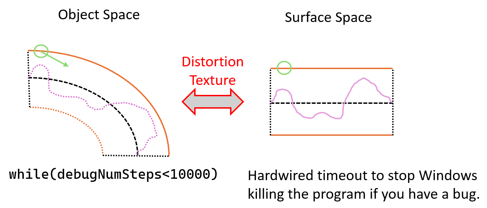
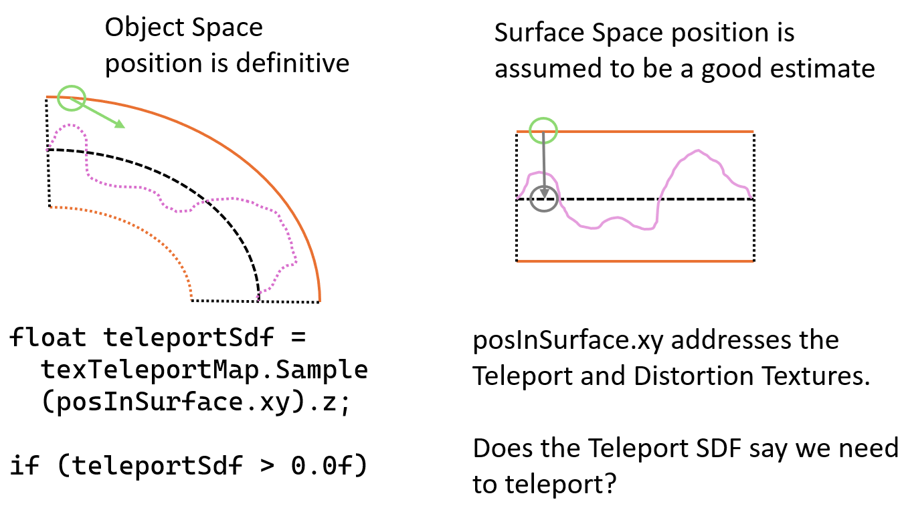
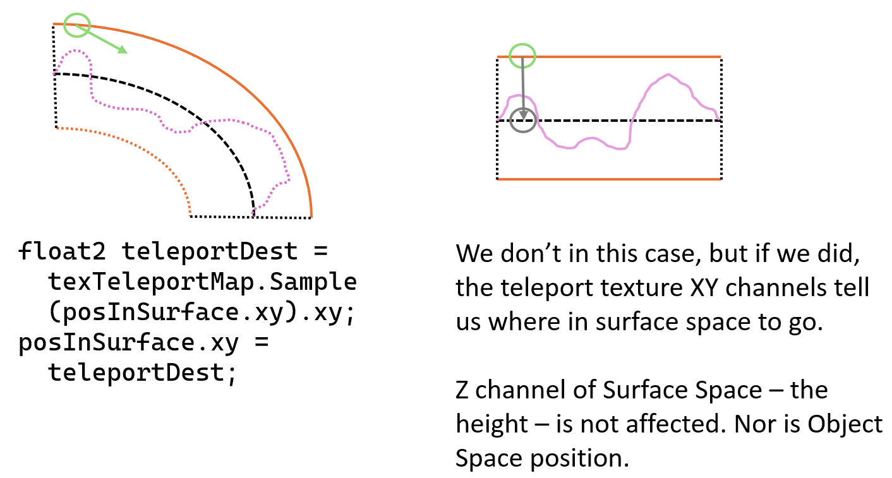
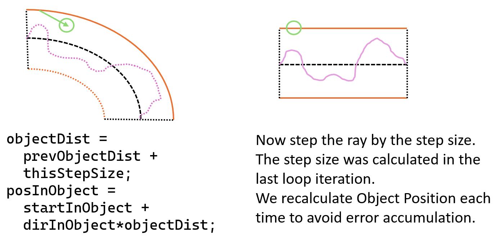
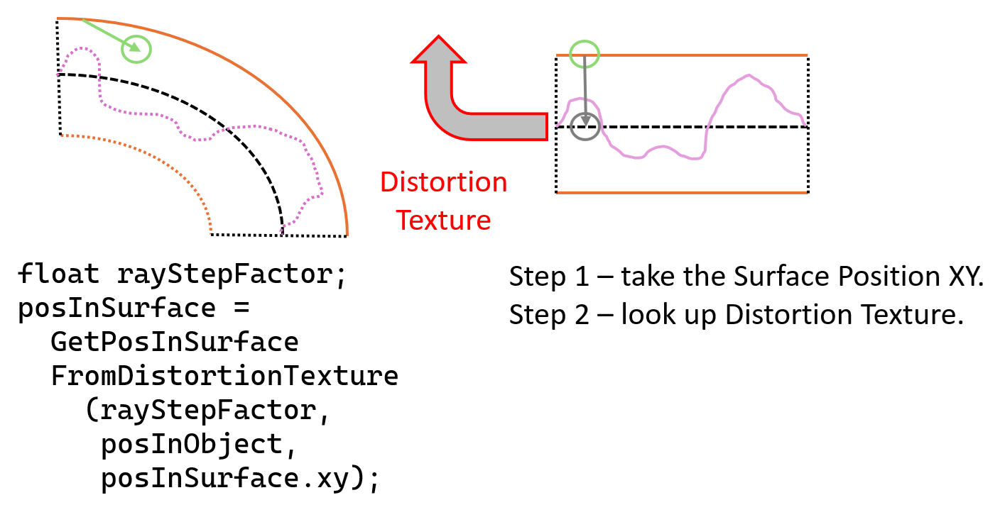
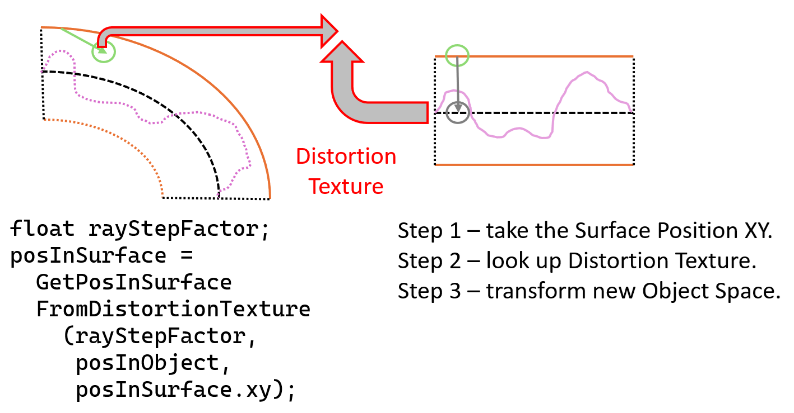
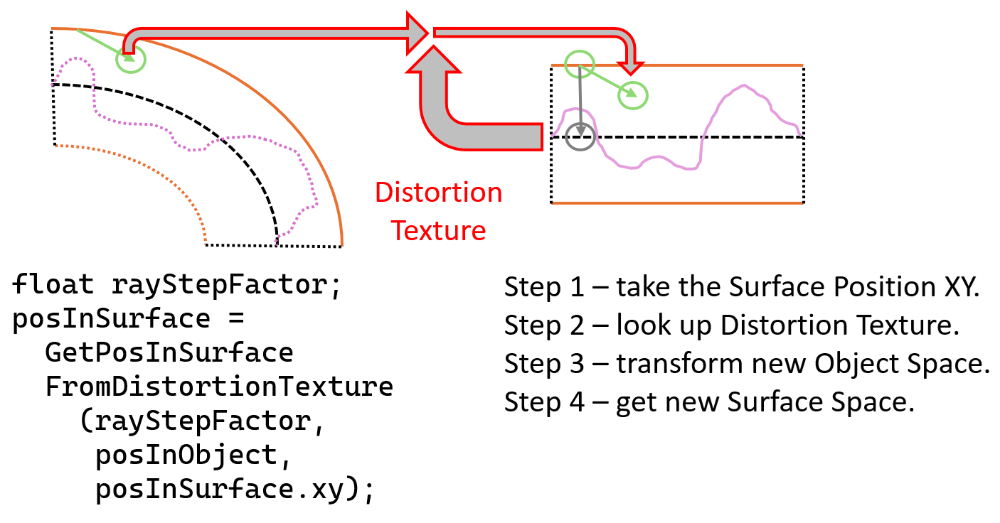
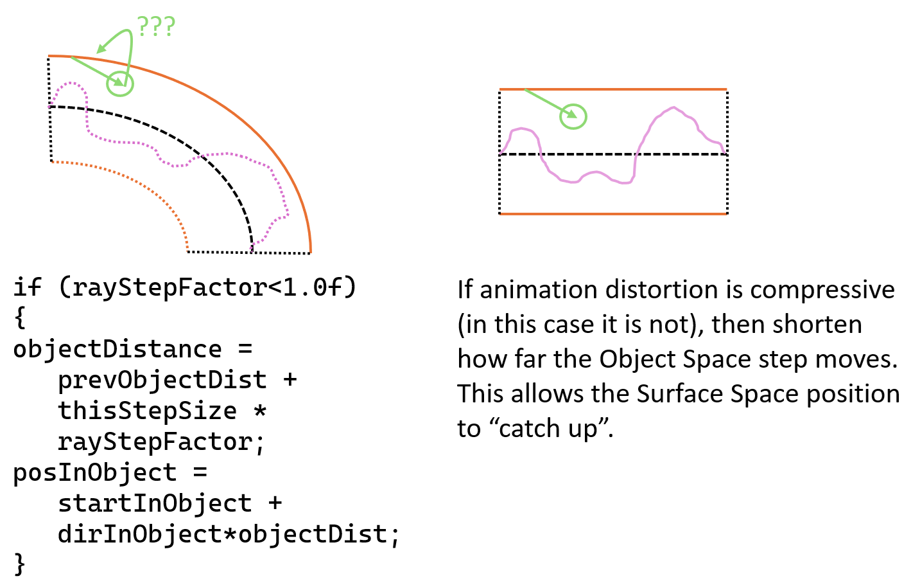
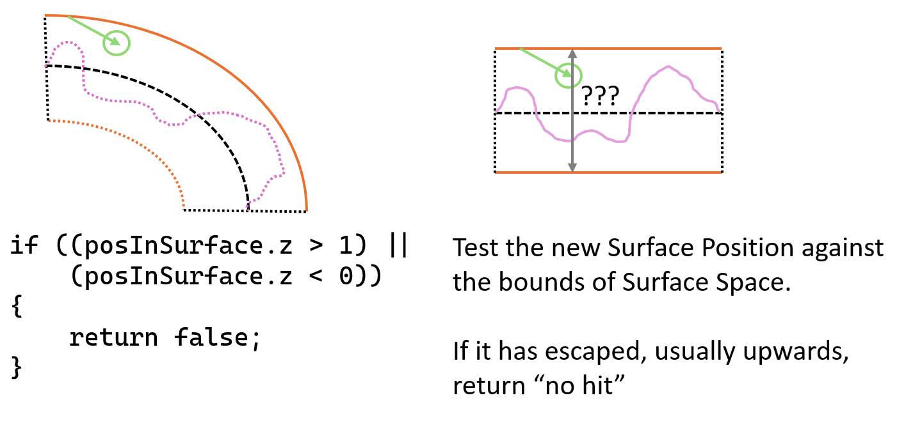
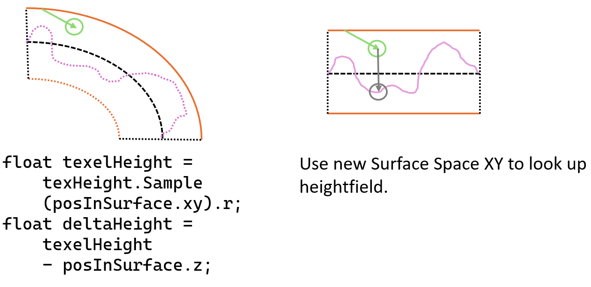
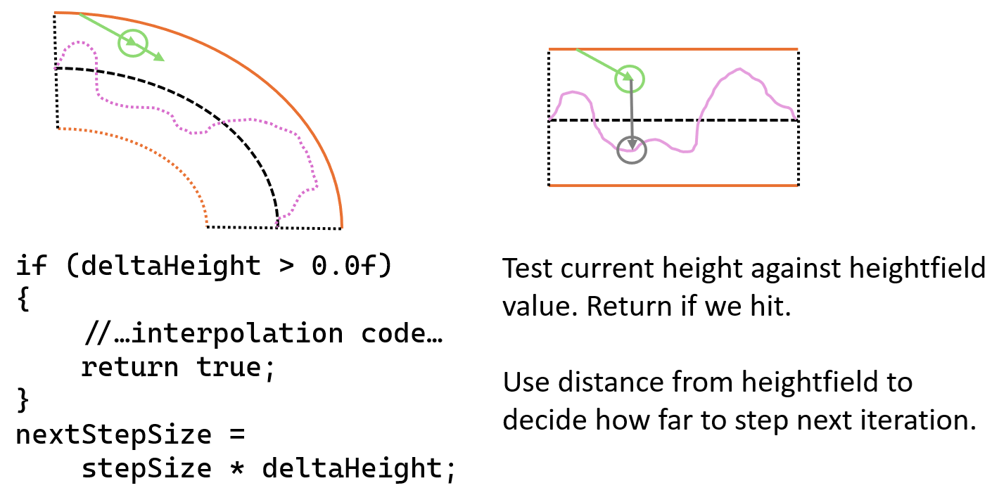
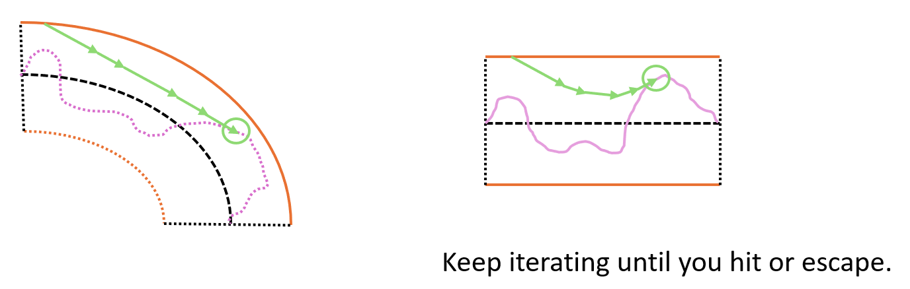
The above is a description of the broad algorithm, but there were some extra details elided for the sake of readability. These details are still very important - they are the difference between an algorithm that kinda works, and one that works robustly. However, they are subtle, and somewhat tricky to explain, which is why they are not in the main body of the description. I shall do my best. If this text description still confounds, follow Obi-Wan’s advice and Use The Source, Luke.
The core of the DASHR algorithm is to find a mapping between Object Space and Surface Space.
The most obvious way to do this is to store this transformation between the two 3D spaces as a 4x3 matrix in a conventional way - a 3x3 set of basis vectors, and a final offset vector. This does indeed work, and is supported in the demo as mode #0. However it has some potentially difficult side-effects, because the offset vector combines two separate bits of information, and so does not have an intuitive “meaning”. The easiest way to explain these side-effects is to first talk about the other way of storing this transformation - mode #1.
Mode #1 takes advantage of the fact that every time we read the Distortion Texture with the texture unit, we read it using the Surface Space UV coordinates. This means we don’t need to store those coordinates as part of the transformation - we can remove them before storage. This means that the offset vector that is stored in the Distortion Texture is simply the Object Space position of that texel. This has a simple “physical” meaning, making intuition significantly simpler. It means that piecewise linearly interpolating this value is a sensible thing to do, and produces obvious and sensible results - a series of Object Space positions.
A snippet of code should make this clearer.
GetPosInSurfaceFromDistortionTexture() is the function that
uses the data in the Distortion Texture to transform from Object Space
to Surface Space, and the common-case “identity scaling” part looks like
this:
// Input: posInObject - the position of the ray in Object Space
// Input: approxPosInSurface - the approximate position of the ray in Surface Space
float2 texCoords = approxPosInSurface.xy;
float4 surfaceFromObject0 = texSurfaceFromObject0.SampleLevel ( smp, texCoords, 0.0 );
float4 surfaceFromObject1 = texSurfaceFromObject1.SampleLevel ( smp, texCoords, 0.0 );
float4 surfaceFromObject2 = texSurfaceFromObject2.SampleLevel ( smp, texCoords, 0.0 );
float4 surfaceFromObject3 = texSurfaceFromObject3.SampleLevel ( smp, texCoords, 0.0 );
float4x4 surfaceFromObject = {...swizzling of above...}
if ( DistortionMode == 0 )
{
// Treated just as a 4x3 matrix mapping one space to the other.
float3 posInSurface = mul ( surfaceFromObject, float4 ( posInObject, 1.0f ) ).xyz;
return posInSurface;
}
else //DistortionMode == 1
{
// The final vector of DistortionTexture stores where we EXPECTED
// to be in Object Space when it was sampled. So find the error,
// which should hopefully be small, and mostly only in the vertical direction.
float3 offsetInObject = posInObject - float3 (
surfaceFromObject._m03,
surfaceFromObject._m13,
surfaceFromObject._m23 );
// Now transform the error to surface space, using a W value of 0.0 to
// ignore the final offset vector that we already used above.
float3 offsetInSurface = mul ( surfaceFromObject, float4 ( offsetInObject, 0.0f ) ).xyz;
// And we know the UV origin - it's the middle of surface space where we sampled.
float3 posInSurface = offsetInSurface + float3 ( texCoords.x, texCoords.y, 0.5f );
return posInSurface;
}The practical result of this is that in mode #1 the piecewise linear interpolation of the Distortion Texture that the texture unit performs does the obvious right thing, and the mapping between Object Space and Surface Space is indeed linear and behaves well even under high animation distortion. In addition, because all channels of the Distortion Texture store intuitive “real” values (basis vectors and Object Space positions) it should be fairly simple to come up with good compressed texture formats to help reduce bandwidth and increase performance.
By contrast in mode #0, the final-row offset vector is a combination of the (transformed) Object Space and Surface Space positions, and what it “physically” means is not very intuitive. This means that the interpolation is not linear, instead it is curved! In fact this curved interpolation does look surprisingly nice, and that is why this method has been left in the code, but it is not well-behaved, and can bulge outside the control mesh, which causes visual artifacts and “clipping”. Additionally, it is hard to measure and control for Animation Distortion (see the section on this below). For this reason, although it is mathematically elegant, it is not the default mode. The rest of the documentation assumes mode #1 unless explicitly stated.
A side-effect of this choice of mode happens in the Edgefill shader. This was skipped over previously, but is worth talking about here. Recall that the goal of the Edgefill pass is to spread the valid data in the Distortion Texture out so that when it is sampled with bilinear filtering, or the raymarcher wanders slightly off the mesh, the data is still valid and the mapping between Object Space and Surface Space is still valid and smooth.
In distortion mode #0, the 4x3 distortion matrix is a standard transformation, so a uniform value indicates a smooth and position-independent field. In this mode, the Edgefill pass can just copy the data around to neighbouring texels unchanged.
But in distortion mode #1, the offset vector being stored is the
desired Object Space position of that texel. So simply copying
the data from one texel to another is invalid - the desired Object Space
position needs to be translated. Unfortunately, by definition these
areas are off the valid mesh, so we don’t have Object Space positions
for those texels. In mode #1 the code in the Edgefill pass extrapolates
the Object Space position by transforming the Surface Space position
back into Object Space, which annoyingly means inverting the matrix
again. This code is in the bottom of the ps_main() function
in PipelineEdgefill.hlsl. There may be a more elegant way
to do this, but the performance seems to be acceptable.
The Teleport Texture has three channels. The first two are UV destination of any teleport that needs to be taken. That is, if the raymarcher knows it is at Surface Position (x1,y1,z1) and it knows it needs to teleport from one side of a texture seam edge to another, it can read the Teleport Texture at position (x1, y1) (ignoring the z1 height value) and that will return a value (x2, y2), and the new Surface Position the raymarcher needs to go to is (x2, y2, z1) (i.e. the same height value).
However - how does the raymarcher know it needs to teleport? The problem is that the Teleport Texture has discontinuities in it where edges meet, and at those places it cannot be read by the texture unit with bilinear interpolation. If it was read with bilinear interpolation, adjacent UV coordinates would be blended together, producing an invalid new UV value and sending the raymarcher into a completely bogus part of Surface Space. So the Teleport Texture (x,y) values must be read with point sampling only.
But that does not answer the question - should the teleport be taken at all? The third channel answers this. It is a Signed Distance Field indicating the distance from the relevant edge. Negative means inside the mesh, positive means outside. This channel is sampled with bilinear filtering, and if it is negative the raymarcher is in a valid part of Surface Space, but if it is positive then the raymarcher is off the edge of valid space and should teleport to the other side. It then reads the Teleport Texture again, point-sampled, and uses the value in the first two channels as the destination.
Note that because the destination is point-sampled from the Teleport Texture, although the new Surface Space position will be in a valid area, it may be up to half a texel away from the correct location. To fix this, first the teleport is done, and then the Surface Space position is refined by reading and applying the Distortion Texture in the usual way.
The teleport SDF is constructed as a precalculation in
CreateTeleportEdgefill(), and then read inside the
TraceRay() function like so (eliding some debug code):
float teleportSdf = texTeleportMap.SampleLevel ( smp, posInSurface.xy, 0.0 ).z;
bool teleported = false;
if ( teleportSdf > 0.0f )
{
float2 teleportDest = texTeleportMap.SampleLevel ( smpPoint, posInSurface.xy, 0.0 ).xy;
posInSurface.xy = teleportDest;
teleported = true;
}Note the SDF in the Z channel is read with the standard
bilinear-filtered smp sampler, while the destination in the
XY channels is read with the smpPoint point-filtered
sampler. In practice it may be wise to separate the channels into two
separate textures because the SDF needs lower precision, but is read far
more often.
When the tangent and bitangent data is computed for the control mesh, it implicitly includes information about the size of the non-linear distortion between Object Space and Surface Space, encoded in the lengths of the tangent and bitangent. Most realtime rendering engines have a similar concept of Surface Space using tangent and bitangent data, but usually this is only used for lighting, and thus the tangent and bitangent are typically normalised to unit length.
Here, we cannot do this - we are not manipulating directions using for lighting, but positions used for rendering heightfields (or similar), so we cannot normalise everything to unit length. The lengths of the tangent and bitangent are important, and they change over the surface of the mesh according to the density of the texture mapping applied at each point. Fortunately, this distortion is computed when the tangent and bitangent are computed offline, and no runtime compensation is needed.
Unfortunately, at runtime we then add a second set of distortions, in the form of animation. The way to deal with this is in the Edgefill phase. Recall that by now the Distortion Texture has been filled in with the 3x3 basis matrix transforming Object Space to Surface Space, and also the Object Space position of that texel.
We compute the amount of animation-induced distortion as part of the
Edgefill rendering phase, in the function ps_main() in the
file PipelineEdgefill.hlsl. For each texel of the
Distortion Texture, we sample the four surrounding texels and take
finite differences of the Object Space position, multiply this by the
Object Space to Surface Space transform, and this gives us the Surface
Space finite differences between the adjacent texels, including the
animation distortion.
We also take the real Surface Space finite differences, which are just the deltas in the UV coordinates used to address the Distortion Texture. By dividing one set of finite differences by the other, we can deduce if the realtime animation caused compression (<1.0) or expansion (>1.0) in each Surface Space axis. These animation distortion factors are stored in spare channels of the Distortion Texture.
When the raymarcher takes each step along the ray, it will have the
old Object Position, the new Object Position, and a guess about the
position in Surface Space. It uses the latter to look up the Distortion
Texture, which gives it the Object Space to Surface Space
transformation, and also the two animation distortion factors computed
above. This is done at the top of the function
GetPosInSurfaceFromDistortionTexture() in
PipelineMain(). It can then take three possible actions in
each axis:
Here, the animation has stretched the control mesh out, moving vertices apart. This causes the stepping algorithm to overshoot the Surface Space estimate at each step. The first step will overshoot its estimate of the new Surface Space position. The next step will spot the overshoot, correct backwards, but also overshoot in the opposite direction. The third will then correct forwards again, but again overshooting. In this way the Surface Position estimate oscillates increasingly wildly around the actual Surface Space position, with the oscillations growing larger and larger. Eventually the oscillations will grow large enough that a somewhat arbitrary part of the heightfield will be hit, or the ray will escape - and either result is incorrect. This causes various phantom shapes to appear around areas of high distortion, which I named “knuckles” and “sky ghosts” while trying to track down their causes.

The solution is to notice that the animation distortion factor is significantly above 1.0 (the value of 1.5 was chosen heuristically, but anything between 1.0 and 2.0 seems to work well). In this case, the delta between the current Surface Space estimate and the new Surface Space estimate is damped by the reciprocal of the animation distortion factor. This eliminates the overshoot and allows the algorithm to refine its successive estimates correctly without ever-increasing oscillations.
The next case to consider is that of moderate expansion, or moderate compression of the mesh by runtime animation. Fortunately this case works just fine as-is. The iterative nature of the raymarching algorithm allows the Surface Space position estimate to remain stable and accurate through this. Each step, any under or overshoot simply results in the next step compensating more or less. The algorithm is self-regulating, and no special action needs to be taken.
Here the mesh has been compressed so much by the animation that two adjacent control mesh vertices have crossed over into each other. Now there are multiple possible Surface Space positions for any given Object Space position, and the algorithm will tend to pick somewhat arbitrarily. This is an existing common problem for standard bone-based animation. For example when animating an elbow, if the elbow bends beyond about 90 degrees, the vertices on the inside of the elbow will typically cross over and interpenetrate. On standard non-DASHR mesh rendering, the Z buffer will take care of the intersection, and it just looks a bit goofy.


The problem when raymarching is that the Object Space position continues to step through space into the area of self-intersection, and it is still taking regular-sized steps through Surface Space. However, once inside the area of self-intersection, we need it to take a lot of large steps through Surface Space all at once, while taking very tiny steps through Object Space, until the area of negative distortion has passed. In the example of the inside of the elbow, the Surface Space position will have moved from the forearm to the biceps, which is a large distance in Surface Space, but without the Object Space position changing much.
To do this, when the animation distortion is negative, the raymarcher is told to undo the standard step it made in Object Space, and to make a much smaller step. In theory this smaller step could be cleverly computed, but in practice I found a fixed step of 1/100 solves the problem acceptably. Meanwhile, Surface Space is stepped as normal.
This solution is not perfect. One problem is that by the time the Distortion Texture informs the algorithm there is negative distortion, the Object Space position is usually well inside the area of self-intersection. This leads to rays that enter the area returning hits with the heightfield without understanding that they are already in the self-intersection zone. This causes a visual “tunnel” into the self-intersection area - it is hard to describe or show in still pictures and best seen in motion in the demo. Eventually the rays move far enough to detect the negative distortion and correct themselves, but the correction is always a bit late.
It is possible an ideal algorithm would be able to “look ahead”, see an area of high negative distortion, and take those steps pre-emptively. However, this look-ahead would add significant cost to the algorithm, and it is unclear how much it would actually improve the visual quality - self-intersection of meshes is simply a known ugliness of bone-based animation, and if artists wish to fix it, they have methods such as adding extra “anti-squash” bones to control the inside of the skin on elbow joints, and finer tessellation of the base mesh. Both these techniques work well for DASHR as well.
As it is, these “tunnel” artifacts are fairly subtle, only apparent on close inspection, and do not distort the silhouette edges of the mesh at typical viewing distance. Future research could certainly improve them, but as it stands it does not appear to be an urgent or particularly objectionable artifact, and the control-mesh modifications mentioned above are available to fix them when they are.
The above is a lot of words for a fairly simple bit of code at the
top of GetPosInSurfaceFromDistortionTexture():
if ( animDistortion.x < 0.0f )
{
// Highly compressed by animation and close to or causing self-intersection.
// We want TraceRay to step very tiny distances in object space
// until we can move the position in surface space past the area of
// self-intersection and out the other side.
scaleFactor.x = 1.0f;
rayStepFactor2D.x = 0.01f;
}
else if ( animDistortion.x > 1.5f )
{
// Animation has caused a lot of stretching.
// We need to damp the motion in surface space to prevent oscillation.
scaleFactor.x = 1.0f / animDistortion.x;
identityScaling = false;
// ...and also step slower in object space.
rayStepFactor2D.x = scaleFactor.x;
}
else
{
// Normal area with low animation distortion.
scaleFactor.x = 1.0f;
rayStepFactor2D.x = 1.0f;
}There are many! I will try to point out which are fundamental limits, which are tricky parts that could be improved with some effort, and which are bits I just haven’t done because of lack of time, or because there were more exciting things to tackle first.
The algorithm as-is requires a few things, some of which could be fixed with effort (see discussions below):
The lengths of the tangent and bitangent matter because they help the ray travel through surface space. You can cope to an extent with wrong lengths, but it will need to do more iterations.
Discontinuities in tangent or bitangent (including in length) will disrupt things oddly and cause more iterations.
Surfaces can bend in on themselves, either due to mesh construction and extrusion, or because of animation with large amounts of bending. When this happens, the Surface Space self-intersects and causes odd “tunnels” inside the mesh. In general this is not that objectionable - no geometry sticks out - but it does look odd on close inspection.
Do not treat the demo as any sort of benchmark. There are many choices I made to sacrifice performance for clarity. In many cases it is not obvious whether one option or another is faster. If you are implementing DASHR in your own engine, you should test the options out properly in your specific context. Examples include:
Self-shadowing stops if the ray goes outside the local skin volume, which means for fully correct longer-range self-shadowing (e.g. an arm casting shadow on a leg) it should be combined with traditional shadowbuffer techniques. This is more an observation than a restriction - I do not plan to try to solve this, as long-range tracing of shadow rays has many performance implications. A nice thing about doing the local self-shadowing with raymarching, but transitioning to shadowbuffers for the medium and long range shadows is that most shadowbuffer-based algorithms require a bunch of epsilons to prevent surface-acne and peter-panning. If the local shadows are being done with raymarching instead, and the shadowbuffer only needs to start dealing with shadows a significant distance from the surface, those epsilons can be relaxed significantly.
Currently the unique UV map determines everything - albedo, normal map, heightfield, and tangent space used for shading. This doesn’t have to be the case, and those textures could all use different sets of UVs which are not unique. However, if you do this, care needs to be taken about where in the code you mean which set of UV/tangent spaces, and don’t get them mixed up - I have not been particularly careful in the labelling here!
There are many cases where mesh seams are somewhat ugly and the artists would be expected to fix them by making sure the albedo and heightfields match on either side of the seam. This is also a problem for the current conventional art pipeline of course, but it’s made more obvious by adding a heightfield. Good robust solutions to this should be investigated.
I decided to publish this super early. There is still much to do before this is bomb-proof, but I wanted to get the core concepts out there for folks to try out and play with, even if only in their heads. So I focused on the parts that were big unknowns, and worrying me, to prove they would work with relatively general, flexible meshes from conventional contemporary art pipelines.
A lot of the rest of the work is “just typing” in that while it’s important and significant effort, it is relatively known techniques with few surprises. As an example, a lot of the textures should use more compressed forms to reduce bandwidth and improve performance - but exploring this space is familiar to many people, and different engines will make different trade-offs.
I plan to continue working on this for a bit, but I hope others will join me in this exploration. That said, I am not looking for Pull Requests - this is my hobby, not a job. Please view this as a research paper, a proof-of-concept demo, and a starting point for copy-paste into your own pipelines - it is not intended to be a practical “live” library that people use as-is in their engines. That said, I am more than happy to swap war stories over social media, or discuss gnarly corner cases, or cunning solutions to those corner cases. And if anybody does want to turn it into a real library - go for it!
Investigate mitigations for “tornados” in areas of high distortion. The current mitigation is to tell the artists not to produce these, which may be impractical in some cases.
The raymarcher does linear interpolation from the previous step when it hits the surface, which does improve quality, but it could instead do a binary search to get even better precision. It could do the same when it teleports, so that mismatches in the heightfield across the seam are handled more precisely.
The teleport SDF channel could be used to “warn” the ray that it is approaching a teleport edge, and so reduce the size of steps it takes as it gets closer.
Larger steps and/or more reliable route-finding could be done by comparing the new surfaceFromObject transform with the previous one. If the difference is beyond some given threshold, take a smaller step and try again.
Self-intersections are not handled very well - visual “tunnels” are formed in the mesh that do not obey visual sense when the mesh is rotated. It would be interesting to explore some better-behaved solutions to this problem.
There’s a lot of random tweakables that had to be tuned by eye - epsilons and such, especially for the shadows. I would like to automate more of them, but we all know rendering is full of epsilons - especially shadow rendering.
Instead of finding the inverse of surfaceFromObject to do the shading step, you could get the initial distortion pass to store it in a separate texture.
Instead of doing the extra edgefill copy step as a pixel shader, do it as Compute Shader, which can bind a target as read&write, and only copy the parts that need it, rather than the whole surface. However, you still need to calculate Animation Distortion for the whole mesh.
Instead of doing the extra edgefill copy step, you could add mesh “fins” to write the extra parts in the first pass. But again, where do you get the Animation Distortion values from then?
Instead of doing the extra edgefill copy step, TraceRay could always indirect through the Edgefill Texture. You have to be a little careful here, because the texture filtering on Distortion Texture is important, and so you also have to do filtering when you read the Edgefill Texture, and then indirect through the filtered coordinate. It might still work right, exactly because the Edgefill Texture is a smooth field. You would also need to measure Animation Distortion by doing multiple taps and finite differences. Whether this is a net win is unclear - yes, it avoids an extra render pass, but it introduces extra latency and texture reads into the heart of TraceRay which can hurt performance - if making this change, make sure you profile!
The teleport texture SDF is a single-channel SDF which means it cannot precisely recreate sharp corners between two edges. Using a multi-channel SDF would solve this - probably using a 2-channel SDF would be sufficient?
We already read the teleport SDF channel to decide if a teleport is needed. Only if it is (which is rare) do we read the teleport destination coords. Splitting these two into separate textures (a single-channel SDF, and a separate 2-channel teleport destination) would reduce bandwidth and cache stress.
Similarly, the teleport texture UV coordinates must be read with point sampling, because they contain discontinuities, and filtering would send the raymarcher into completely invalid areas of the mapping. Instead, multiple teleport textures could be used, and discontinuities split up between them. This would allow reading them with bilinear filtering, giving more precision to the destination, and requiring fewer iterations from the raymarcher when teleporting.
A lot of data - texture, vertex, etc is stored as big fat float32 data. This is just for ease of development on my part - I wanted to focus on algorithmic puzzles, not constantly go chasing down precision problems. Fairly straightforward to improve, and will give big performance benefits.
More efficient maths routines. For example the matrix inverse is a general-purpose 4x4 inverse, whereas in most cases in the code we only need a 4x3 or 3x3 inverse. The assumption is that the HLSL compiler is good at spotting that a lot of input values are 0.0 and 1.0 and simplifying, but this assumption should be confirmed. The current performance is acceptable for a demo.
T-junctions, interpenetrating triangles, self-intersecting meshes and other strange topologies. In many cases it’s not even clear how to define “surface space” for these topologies, or how to express the teleports between them. I do want to support lone edges and thin sheets, e.g. for clothing, but arbitrary triangle soup is not a goal.
More efficient raymarching and acceleration structures (min-max mipmaps, horizon maps, etc). Better lighting models. Ambient occlusion. Subsurface scattering. Other fancy effects. All those things are great of course, and if you adapt DASHR to your engine you should absolutely do those improvements, but there’s plenty of other papers and tutorials about them, especially in the SDF/Shadertoy/raymarcher scene - go read them! The raymarcher in this demo is just good enough to show the technique working, and that’s all it needs to be.
Making DASHR a general robust library that you can drop into your own pipeline. This is a research paper and a proof-of-concept demo. I do not have the time or bandwidth to make this a “live” drop-in library. I shall leave this to others.
More support for non-heightfields, such as SDF, fractal, gaussian splats or voxel rendering. The heightfield tracer I have written is very simple, and heightfields are a relatively understandable representation, but we still have trouble authoring content for them. Authoring SDF or volumes in the current art pipelines feels like a very difficult challenge. Games such as Dreams have tackled this problem head-on and made amazing things, but it’s radically different to our existing pipelines, and it is unclear how to merge them.
I can’t speak for external libraries or assets, but I don’t like or use AI/LLMs. Code is for humans, by humans.
Released under the most permissive licenses possible. The intent is that everyone adapt this technique for their engines - share and enjoy! Please do let me know if you’re using it for something cool, and if you ship, a Special Thanks credit on Mobygames would be lovely.
As with the STB libraries, you can choose either license, depending on which your lawyers prefer.
(original text https://opensource.org/license/mit-0)
Copyright 2026 Tom Forsyth
Permission is hereby granted, free of charge, to any person obtaining a copy of this software and associated documentation files (the “Software”), to deal in the Software without restriction, including without limitation the rights to use, copy, modify, merge, publish, distribute, sublicense, and/or sell copies of the Software, and to permit persons to whom the Software is furnished to do so.
THE SOFTWARE IS PROVIDED “AS IS”, WITHOUT WARRANTY OF ANY KIND, EXPRESS OR IMPLIED, INCLUDING BUT NOT LIMITED TO THE WARRANTIES OF MERCHANTABILITY, FITNESS FOR A PARTICULAR PURPOSE AND NONINFRINGEMENT. IN NO EVENT SHALL THE AUTHORS OR COPYRIGHT HOLDERS BE LIABLE FOR ANY CLAIM, DAMAGES OR OTHER LIABILITY, WHETHER IN AN ACTION OF CONTRACT, TORT OR OTHERWISE, ARISING FROM, OUT OF OR IN CONNECTION WITH THE SOFTWARE OR THE USE OR OTHER DEALINGS IN THE SOFTWARE.
(original text https://unlicense.org/)
This is free and unencumbered software released into the public domain.
Anyone is free to copy, modify, publish, use, compile, sell, or distribute this software, either in source code form or as a compiled binary, for any purpose, commercial or non-commercial, and by any means.
In jurisdictions that recognize copyright laws, the author or authors of this software dedicate any and all copyright interest in the software to the public domain. We make this dedication for the benefit of the public at large and to the detriment of our heirs and successors. We intend this dedication to be an overt act of relinquishment in perpetuity of all present and future rights to this software under copyright law.
THE SOFTWARE IS PROVIDED “AS IS”, WITHOUT WARRANTY OF ANY KIND, EXPRESS OR IMPLIED, INCLUDING BUT NOT LIMITED TO THE WARRANTIES OF MERCHANTABILITY, FITNESS FOR A PARTICULAR PURPOSE AND NONINFRINGEMENT. IN NO EVENT SHALL THE AUTHORS BE LIABLE FOR ANY CLAIM, DAMAGES OR OTHER LIABILITY, WHETHER IN AN ACTION OF CONTRACT, TORT OR OTHERWISE, ARISING FROM, OUT OF OR IN CONNECTION WITH THE SOFTWARE OR THE USE OR OTHER DEALINGS IN THE SOFTWARE.
The demo is a Windows DirectX11 demo. You can run the prebuilt executable as-is, or build from source. You should only need a recentish version of Visual Studio to build it - please let me know if you have trouble. It assumes you have the Dear ImGui and STB_Image public libraries in adjacent directories:
\SkinnedHeightfield
|main.cpp
|skinnedheightfield.vcxproj
|skinnedheightfield.sln
|ConstantBuffer.hlsl
|PipelineDeform.hlsl
|PipelineEdgefill.hlsl
|PipelineMain.hlsl
|PipelineWireframe.hlsl
|Utils.hlsl
|VertexInput.hlsl
|yak_shiv_misc.h
\yak_shiv_matrix.h
\imgui
|imgui.h
|imgui_impl_win32.h
\imgui_impl_dx11.h
\stb
\stb_image.hNote - yak_shiv_misc.h and
yak_shiv_matrix.h are part of my general-purpose library
which I do plan to publish shortly. For the moment they are in the
SkinnedHeightfield repo, but they may vanish/move in future.
STB libraries: https://github.com/nothings/stb
Dear ImGui libraries: https://github.com/ocornut/imgui
Alt gives Maya-style orbit controls:
Alt + LMB: orbit focus point.
Alt + MMB: pan focus point.
Alt + RMB: zoom in/out of focus point.
Without Alt, but with LMB you get an FPS camera:
LMB: rotate camera.
LMB + RMB: pan up/down, roll left/right
LMB + WASD: pan left/right and fly forwards/back.
Esc: toggle window visibility.
Space: toggle animation on/off.
Please reference this document as:
Other related papers: